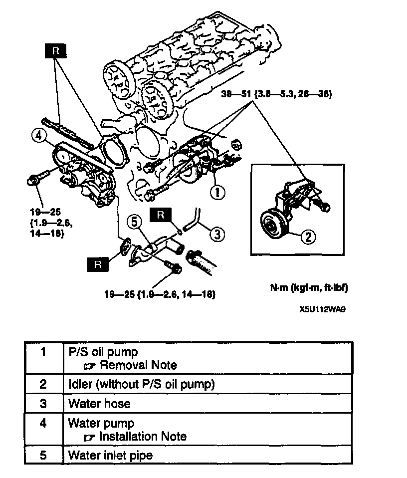
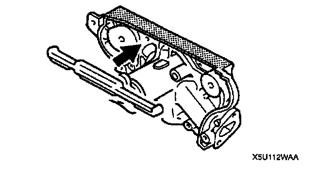

Water Pump: Service and Repair

WATER PUMP REMOVAL/INSTALLATION
1. Remove the air cleaner.
2. Remove the timing belt.
3. Remove in the order indicated in the table.
4. Install in the reverse order of removal.
P/S Oil Pump Removal Note
^ Remove the P/S oil pump with the oil hose still connected. Position the P/S oil pump so that it is out of the way.
Water Pump Installation Note

^ Install the new rubber seal with the bonding agent.